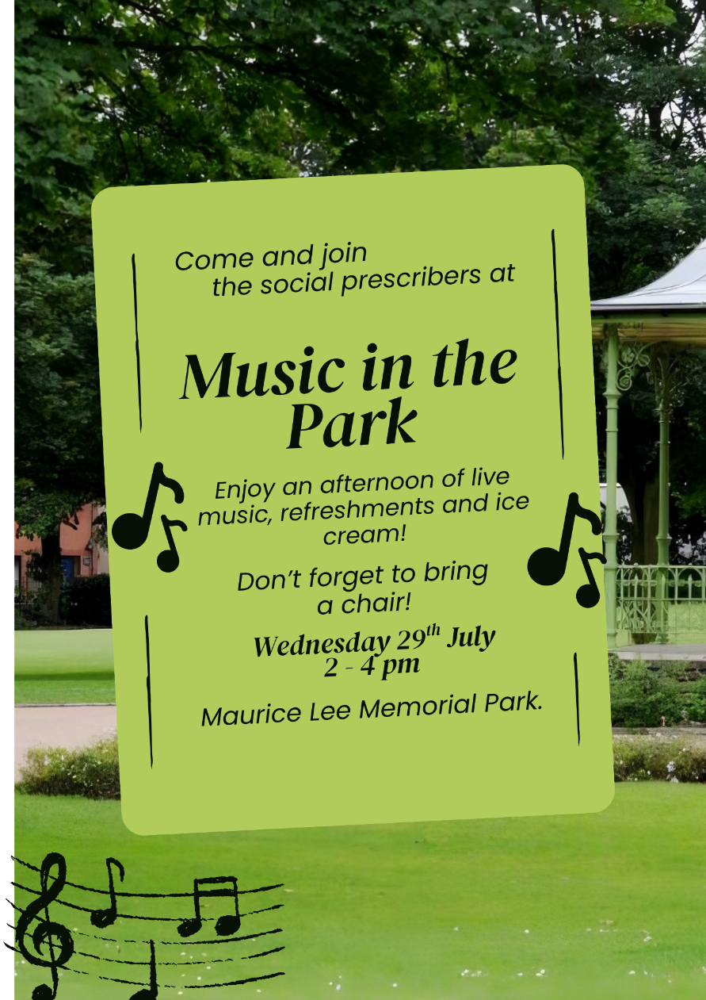

Project 03 / Creative work
Campaign assets.
Design work created in Canva and Adobe Photoshop, with a focus on clear identity and accessible communication.
A personal identity
DT logo
This is my most recent piece of creative work. I created the logo in Canva after researching personal logos and finding a colour scheme that I liked. Initial-based designs were a common approach in my research, so I used my initials to create a clear, recognisable personal identity.
The result combines warm orange and gold tones with a simple monogram and wordmark.
Accessible promotion
Swadlincote Primary Care Network leaflet
Created in Canva for Swadlincote Primary Care Network, this leaflet promotes the activities they put on for the local community.
The work was particularly challenging because I had to account for potential barriers experienced by the target audience, including difficulty seeing and differentiating colours. I used high-contrast colours, large fonts and easy-to-read typography to make the information clearer and more accessible.

Tools used